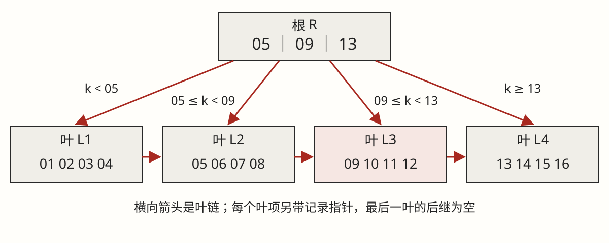

学号范围查询
本例根→L3 定位 11，再沿叶链到 L4，遇 15 停止；插入 17 分裂叶子，父结点仍能容纳
叶链查范围，哈希桶查等值，位图组合低基数条件
 VER. 2608
Built with impress.js
VER. 2608
Built with impress.js
比较三类索引的查找路径与更新代价
比较查询条件、索引读块与回表代价
| 查询与写入模式 | 候选结构 | 影响代价的因素 |
|---|---|---|
| 随机等值 | B+ 树或哈希 | 选择性、规模、分布与溢出 |
| 范围与排序 | B+ 树 | 大范围可能接近扫描成本 |
| 低基数筛选 | 位图 | 基数、读写比与回表成本 |
| 高频写入 | 少量必要索引 | 维护成本可能超过查询收益 |
优化器根据命中行数、回表块数和顺序扫描成本选择访问计划
独立样例含学号 01—16，省略共同前缀 201800

本例根直接连接叶子，没有中间层；更大的树可增加中间层。根和中间层选子树，叶项保存键与记录指针，完整学生记录仍在基本表
沿教材秩 n＝5 的示例；以下规则只用于这棵教学树
| 结点 | 本例容量 | 结构约束 |
|---|---|---|
| 非根叶结点 | 2—4 个键及记录指针 | 另有指向下一叶的指针 |
| 非根中间结点 | 2—4 个分隔键 | 有 3—5 个孩子 |
| 根结点 | 最多 4 个分隔键 | 非叶根至少 2 个孩子 |
| 全树 | 所有叶子深度相同 | 非根结点只有一个父亲 |
本例分隔键取右子树最小值，等于分隔键时走右侧。只有一个结点的树可由根兼任叶子；实际页容量不固定为 4 个键
延续前图，区间包含 09，不包含 13；等于 13 时应去叶 4
| 步骤 | 比较或读取 | 得到什么 |
|---|---|---|
| 根 R | 09 ≤ 11 < 13 | 选择叶 L3 |
| 叶 L3 | [09,10,11,12] | 找到 11 的记录指针 |
| 基本表 | 沿指针读取学生 11 | 返回所需列 |
查 17 时，L4 中无匹配键，判定不存在。所有叶子同层；实际耗时还受缓存命中、回表和并发等待影响
BETWEEN 包含两端；下界不存在时，从第一个不小于下界的键开始
| 位置 | 本步读取 | 取出或停止 |
|---|---|---|
| 根 R | 按 11 定位 L3 | 只定位一次起点 |
| L3 | [09,10,11,12] | 取 11、12，沿叶链继续 |
| L4 | [13,14,15,16] | 取 13、14，遇 15 停止 |
条件为 Sno≥11 时，扫描到叶链末尾。完整记录按指针回表；磁盘 I/O 按实际读入的块数计算
叶最多 4 项；原 L4 为[13,14,15,16]，加入 17 后有 5 项
| 状态 | 叶层 | 根的分隔键 |
|---|---|---|
| 插入前 | [13,14,15,16] | [05,09,13] |
| 分裂后 | [13,14] → [15,16,17] | [05,09,13,15] |
把新右叶的最小键 15 复制到父结点，15 仍留在叶子中；接好原叶链与新兄弟。根仍在容量内，所以这一次不会增高
父结点也溢出时才继续向上传播；根分裂并产生新根时，树高才增加。修改索引键通常按删旧项、插新项处理
三个独立的局部例子；相邻叶属于同一父结点
| 删除前与操作 | 叶层处理 | 父结点维护 |
|---|---|---|
| [05,06,07]删 05 | 留[06,07]，无需合并 | 本例分隔键 05 改 06 |
| [05,06]删 05，右邻[07,08,09] | 借 07，变[06,07]与[08,09] | 更新两叶的分隔边界 |
| [05,06]删 05，右邻[07,08] | 合并成[06,07,08] | 删除多余孩子和分隔键 |
合并会删除父结点中的入口，可能引发逐层调整；非叶根只剩一个孩子时可收缩。直接删除块首键也可能需要更新父键
独立示例：h(k)＝学号末两位 mod 3，每桶最多 3 项
| 桶号 | 桶内的键，均另带记录指针 | 计算例子 |
|---|---|---|
| B0 | 03、06、09 | 09 mod 3＝0 |
| B1 | 01、04、07 | 07 mod 3＝1 |
| B2 | 02、05、08 | 08 mod 3＝2 |
查 07：定位 B1，逐项比较 01、04、07；同桶的键可能不同。哈希索引桶存键与记录指针，哈希存储桶直接存数据记录
给前页继续插入 12、15，二者都落入已满的 B0
| 操作 | 查找路径 | 结果 |
|---|---|---|
| 插入 12、15 | B0[03,06,09] → O0[12,15] | 新建溢出块 O0 |
| 查 15 | 15 mod 3＝0，查 B0 再查 O0 | 命中后取记录指针 |
| 查 18 | 18 mod 3＝0，查完整条链 | B0、O0 均无 18 |
| 查 05—08 | 键落在 B2、B0、B1、B2 | 桶号不能表示键值区间 |
目标桶可溢出，即便其他桶有空位。删除后可按容量合并溢出块；桶数量、键值分布和哈希函数共同影响溢出
扩桶涉及桶映射更新与索引项迁移
| 结构或策略 | 桶／索引如何变化 | 主要问题 |
|---|---|---|
| 静态哈希索引 | 桶数预先固定 | 增长后溢出链变长 |
| 周期重组（增长策略） | 定期增加桶并重组索引 | 重组耗时且可能影响查询 |
| 动态哈希索引 | 随数据逐步扩展桶或目录 | 管理逻辑更复杂 |
例如 mod 3 改为 mod 6，键 09 从 B0 移到 B3，旧映射不能继续用。周期重组是策略；可扩展哈希、线性哈希按各自规则逐步扩展，不保证完全没有溢出
取 8 条有效记录，按 R1—R8 固定顺序；本例字段均非 NULL
| 属性条件 | 位向量（左到右 R1—R8） | 为 1 的记录 |
|---|---|---|
| 专业＝信息管理 | 0 1 0 0 1 0 1 0 | R2、R5、R7 |
| 专业＝计算机 | 1 0 1 1 0 0 0 0 | R1、R3、R4 |
| 专业＝信息安全 | 0 0 0 0 0 1 0 1 | R6、R8 |
| 性别＝女 | 1 0 0 0 1 0 1 0 | R1、R5、R7 |
专业有 3 个取值，标准位图有 3 条向量；8 条记录对应每条向量的 8 位。条件组合要求各向量按同一行位置对齐
沿用 R1—R8：AND 求交集，OR 求并集
01
02
03
04
05
06
07信息管理 01001010
女生 10001010
按位 AND 00001010 → R5、R7，共 2 人
信息管理 01001010
计算机 10110000
按位 OR 11111010 → R1、R2、R3、R4、R5、R7对结果中的 1 计数，本例 AND 命中 2 人；读取姓名需按位置回表。位图包含当前查询可见的有效记录
前页专业有 3 个值、8 行，未压缩标准位图共 3×8＝24 位
| 数据变化 | 本例要维护什么 | 设计判断 |
|---|---|---|
| R5 转入计算机专业 | 信息管理位 1→0，计算机位 0→1 | 一行变更涉及两条向量 |
| 插入新学生 | 分配行位置并维护对应位 | 行位置规则必须一致 |
| 专业取值增多 | 标准位图需更多向量 | 空间还受压缩方式影响 |
低基数指不同取值少。位图适合读多写少的统计筛选；频繁更新的代价包括向量维护、锁定范围和并发等待
专业编码：信息管理＝00，计算机＝01，信息安全＝10
| 编码位 | R1—R8 的位向量 | 信息管理 00 的判断 |
|---|---|---|
| 高位 H | 0 0 0 0 0 1 0 1 | H＝0 |
| 低位 L | 1 0 1 1 0 0 0 0 | L＝0 |
| 组合结果 | 0 1 0 0 1 0 1 0 | NOT H AND NOT L |
K 个取值需 ⌈log₂K⌉ 条向量，本例 2×8＝16 位（未计压缩、NULL 与删除标记）。查 00 组合两向量，取反限于这 8 个有效行位置
学号范围、学号等值、信息管理女生统计、高频写入：路径与维护
本例根→L3 定位 11，再沿叶链到 L4，遇 15 停止；插入 17 分裂叶子，父结点仍能容纳
哈希计算桶号后检查目标桶与溢出链；哈希桶无序，不能沿桶按键值范围查找，增长时还要处理扩桶或重组
两向量按位与得 00001010，R5、R7 共 2 人；取姓名还要回表，转专业还要维护两条向量
高频写入需控制索引维护成本；大范围查询需比较索引读块、回表与顺序扫描代价